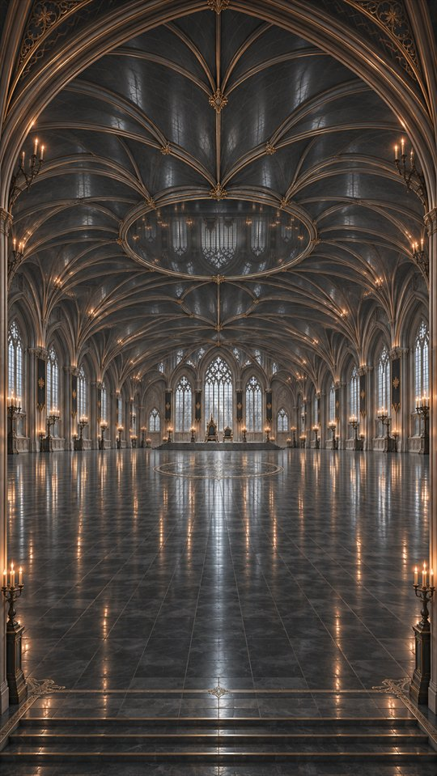
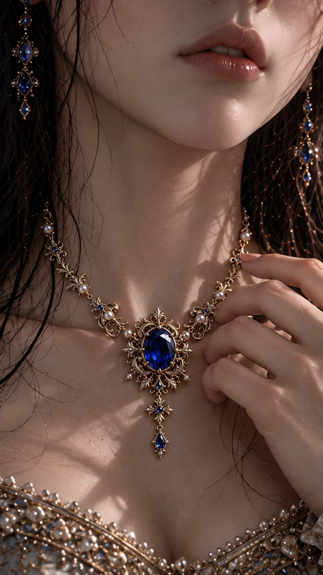
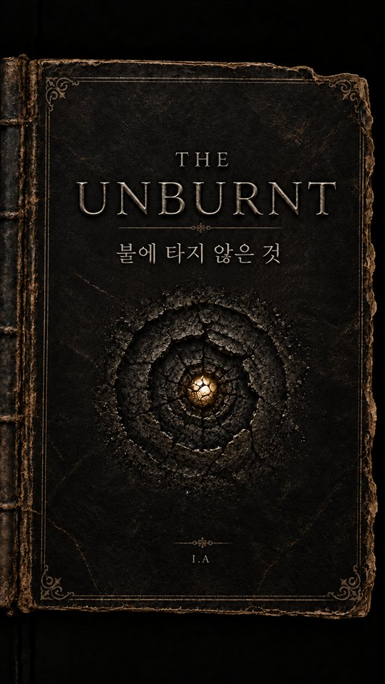

THE WORLD OF ASHWORTH
이야기 너머, 왕국의 법칙
거울에 비친 얼굴과 기록된 이름.
그 안에서 살아가는 이들의 세계를 만나보세요.
연재가 이어질수록 왕국의 더 많은 이야기가 차례로 공개됩니다.

WORLD / 01왕국의 질서
애시워스 왕국의 거울은 외모만을 비추지 않는다. 한 사람의 행동과 공식 기록, 사람들 사이에 쌓인 평가가 거울 속 모습에 반영된다. 왕국은 이 모습을 ‘인영’이라 부른다.
사람들은 인영을 통해 누군가를 믿고, 자격을 인정한다. 혼인과 직업, 거주를 허락받는 일까지 거울 속 모습에 연결되어 있다.
그러나 거울 속의 평온한 얼굴과, 그 앞에 선 사람이 느끼는 마음이 언제나 같은 것은 아니다.
NAMES & RECORDS
이름과 기록
한 사람의 삶을 증명하는 것
이 왕국에서 기록된 이름은 법의 보호를 받는 증명이다. 누구의 가족인지, 어디에서 살 수 있는지, 무엇을 소유하고 물려받을 수 있는지가 그 이름에 연결된다.
기록은 사람의 권리와 관계를 지켜준다. 하지만 정해진 항목에 담기지 않는 삶은, 실제로 존재하면서도 공식적으로 인정받기 어렵다.
누군가와 함께 살아온 시간만으로는 가족임을 증명할 수 없는 곳. 이곳에서는 자신의 삶을 설명하기 위해, 먼저 기록에 맞는 이름이 필요하다.

WORLD / 03사물과 문헌
THE SAPPHIRE
사파이어 목걸이
완벽한 공주의 목에 남은 흔적
스물여덟 번째 이름의 날, 아이리스는 정혼자 커런에게 사파이어 목걸이를 받는다. 오래전 왕실의 한 여인을 위해 준비되었던 예물이었다.
푸른 보석은 공주의 목에서 아름답게 빛난다. 그러나 아이리스가 자신의 마음과 몸의 감각을 외면하며 기대받는 모습에 맞추려 할수록, 목걸이는 숨을 조여온다.
아이리스는 목에 남는 상처와 가빠지는 숨조차 자신이 조금 더 견디면 되는 일이라고 여긴다. 거울 속 공주는 여전히 완벽하기 때문이다.

WORLD / 04금서
THE UNBURNT
금서 『불에 타지 않는 것』
왕국이 존재를 부정하는 책
누가 썼는지, 언제 만들어졌는지 알려지지 않은 책. 불에 타지 않아 소각되지 못한 채 봉인되어 있지만, 왕국은 그 책이 존재하지 않는다고 말한다.
책은 거울의 판정과 기록이 한 사람의 전부를 설명할 수 있는지 묻는다. 당연하게 받아들였던 이름과 역할, 옳다고 믿어온 삶을 다시 바라보게 한다.
아이리스는 책장을 넘길 때마다 자신이 누구인지 안다고 믿었던 확신에 금이 가는 것을 느낀다. 무엇을 해야 하는지에 가려져 있던, 자신이 무엇을 원하는지에 대한 물음과 함께.